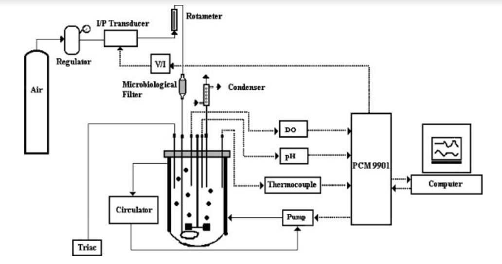
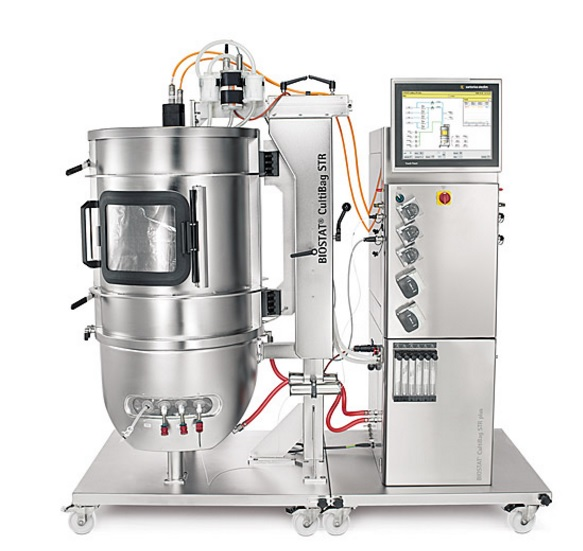
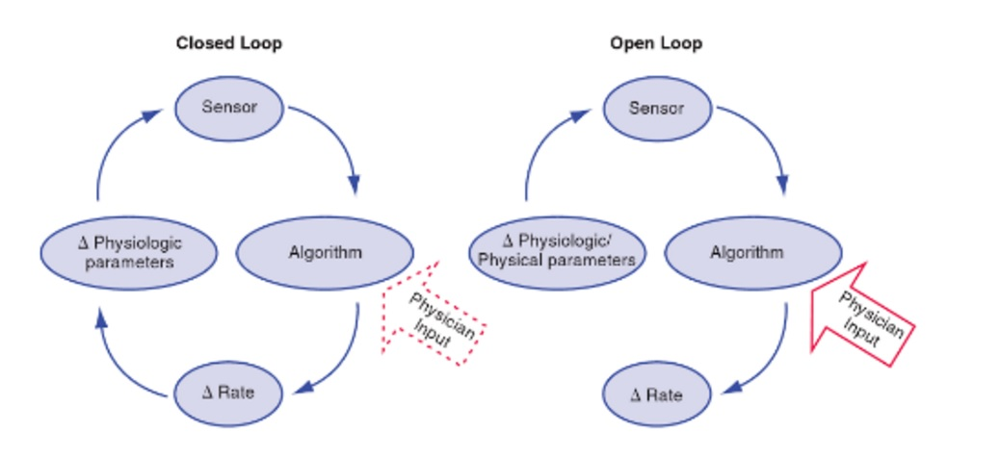
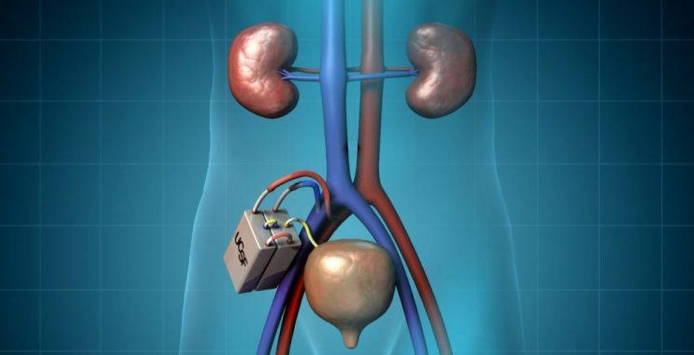
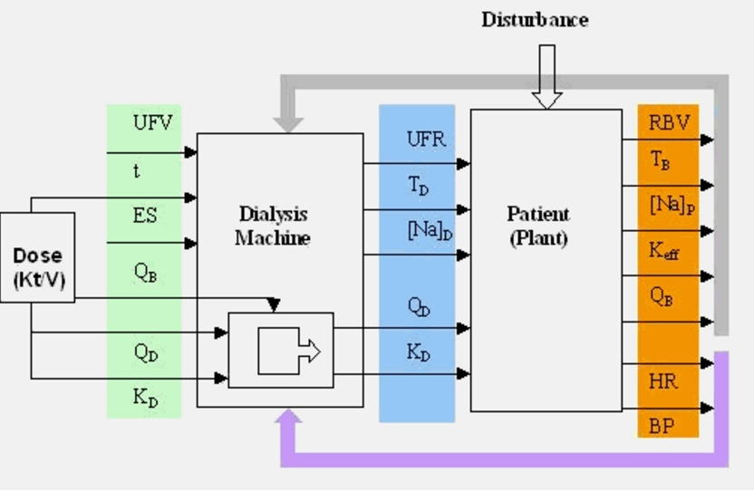
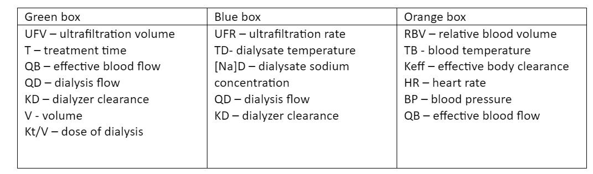

Team Yip Yip
Devices
Neonatal Intensive Care unit
What is it?
 Fig.1 Incubator for premature infants
Fig.1 Incubator for premature infants
A neonatal intensive care unit is a unit of hospital specialised in the care of ill or premature new-born infants. They were developed in in the 1950s and 1960s by paediatricians to provide better temperature support, isolation from infection risk, specialised feeding, and access to specialised equipment and resources.[1]
Why do infants need one?
One of the most important Incubators functions is control of temperature, this is because mammals have the ability of being able to maintain a constant body temperature, but this can be overwhelmed by extreme temperatures, babies have a much smaller range of environmental temperatures they can withstand. Infants have disadvantages in temperature regulation such as: a large surface area, poor thermal insulation, and small amount of mass to act as a heat sink. [1]
- They are born too early so they need extra help with breathing, feeding and keeping warm.
- Very small and low birthweight.
- Due to infection.
- Recovery from surgery.
- Complications with the mother such as diabetes.
- Difficult delivery.[2]
How the incubator controls temperature?
There are 2 types of incubators closed and open. Open incubators warm the baby but do not provide any other controlled environment. The advantage of this is that it is easy to access the baby due to the incubator having an open top and has a simple construction. Closed incubators are used more often as open incubator are short term. Closed incubators regulate temperature, humidity and oxygen supply. The temperature is controlled by either manual selection or by skin temperature control. A temperature probe is placed on the baby’s skin and adjusts the heat to keep the babies skin at the desired temperature. However, there are some risks to this control technique, in one case study a baby died due to the incubator overheating. When the baby was to be washed the skin sensor was removed and left hanging outside the incubator, thus the skin sensor detected room temperature 25 degrees Celsius and increased the temperature to 45 degrees. Most incubators have safety measures to prevent this, as there was in this case but the circuit was defective. [3] In England (2015) 1 in 9 babies born need neonatal care, driven by the increased birth rates and the increased age at which women are having children. But the premature baby survival rate has rose from 40% in 1993 to 53% in 2006 for babies born between 22 and 25 weeks. This shows that with the greater use of these devices in part have lead to a greater survival rate.[4]
How do adults control their body temperature?
 Fig.2 CAPTION HER
Fig.2 CAPTION HER
Temperature receptors in the skin detects changes to external temperature and stimulate an impulse to be sent by the nervous system to the hypothalamus centre, that also has blood temperature detectors. The hypothalamus then triggers effectors to respond to this stimulus and try to return the skin temperature back to the norm. [5]
References
- http://www.ebme.co.uk/articles/clinical-engineering/9-baby-incubation
- "Special Care: Premature Or Sick Babies - Pregnancy Guide - NHS Choices". Nhs.uk. N.p., 2017. Web. 15 Jan. 2017.
- Jacobson, Bertil and Alan Murray. Medical Devices. 1st ed. Edinburgh [etc.]: Elsevier, 2007. Print.
- "Premature Birth And The NHS". People's History of the NHS. N.p., 2017. Web. 15 Jan. 2017.
- "Temperature Control | S-Cool, The Revision Website". S-cool.co.uk. N.p., 2017. Web. 15 Jan. 2017.
Bioreactors
Introduction
A bioreactor is any engineered system that utilises supports live organisms within it as part of its function (e.g. hosting bacteria that break down sewage), but in the context of bioengineering usually refers to any device that can be used to grow microorganisms or tissue cultures. As such it needs to provide essential nutrients and remove waste by-products in order to maintain the colonies. While this can be done without feedback, creating feedback loops allows specific concentrations of each to be maintained thus maximising efficiency of the system by creating optimum conditions.
Because it can also be used for medical purposes, we included it along with the other bioengineering devices. Its uses are in vitro testing, as cells can be grown to test biocompatibility with biomaterials, chemotherapy medication, medical drugs and many more on human cell cultures before being put inside patients. [1] [4]
Overview

Fig.1
Illustration of different components connected to the bioreactor[7]

Fig.2 A bioreactor sold by Sartorius, model BIOSTAT® STR [8]
The bioreactor consists of a chamber with various connected probes, measuring temperature, humidity, CO₂ concentration and O₂ concentration. The optimum levels for each of these is inputted with suitable parameters on either side. If the value within the bioreactor falls out of this range, the probes relay the information to the various apparatus required in order to bring it back to optimum levels. E.g. if the temperature were to drop too low, the heater would be activated to bring it back up.
Usually the ideal conditions are a temperature of 37⁰C, relative humidity of 80%, CO₂ concentration of 5% and O₂ concentration of 20%. [2] [3]
Difficulties with modern bioreactors
Designing control systems for bioreactors however presents many problems for a number of reasons.
- Compared to other fields of engineering etc, creating mathematical models accurately describing cell growth has proven difficult due to the more random nature of cell division. The control system must therefore be robust enough to account for potentially large uncertainties in the model.
- Sensors needed for measuring the different variables within the bioreactor are often not very reliable, meaning submitted data from the system may not be highly accurate, which requires the control system to be able to reject disturbances.
- The growth of micro-organsims is non-linear and will vary greatly over time. The control system will need to be able to use the available measurable variables to estimate future parameters from.
- Changing metabolite concentrations also has a very slow response time on growth which will not be immediately measurable. To prevent metabolite concentration being altered past the point required the system must have a form of predictive control in place. [4]
How are the different variables measured?
UV rays are emitted into the bioreactor as it excites NADH/NADPH (which can be found in all organisms) causing them to emit fluorescence. This fluorescence can be measured and give a quantitative figure to help determine the concentration of microorganisms in the bioreactor.
Dissolved oxygen concentration can be measured through a number of methods. One of the most common is to titrate samples of the bioreactor mixture at regular intervals against sodium sulphite and calculate the oxygen concentration from the amount needed to oxidise the sulphite to sulphate. [5]
A pH probe can easily measure pH. This helps determine carbon dioxide concentration too as we can use knowledge of the carbon dioxide buffer system to calculate carbon dioxide concentration from carbonic acid concentration. [6]
References
- Achilli, Andrea et al. "The Forward Osmosis Membrane Bioreactor: A Low Fouling Alternative To MBR Processes". N.p., 2017. Print.
- "Neural Networks For Control". Google Books. N.p., 2017. Web. 8 Jan. 2017.
- FSullivan, M., P. Galea, and S. Latif. "What Is The Appropriate Oxygen Tension For In Vitro Culture?". N.p., 2017. Print.
- Shimizu, K. "An Overview On The Control System Design Of Bioreactors". N.p., 2017. Print.
- N.p., 2017. Web. 8 Jan. 2017.
- Frahm B, et al. "Determination Of Dissolved CO(2) Concentration And CO(2) Production Rate Of Mammalian Cell Suspension Culture Based On Off-Gas Measurement. - Pubmed - NCBI". Ncbi.nlm.nih.gov. N.p., 2017. Web. 8 Jan. 2017.
- Bioreactor Configurations 341 Submerged Fermentor Systems - Food Biotechnology". Barnardhealth.us. N.p., 2017. Web. 5 Feb. 2017.
- "BIOSTAT STR". Sartorius.com. N.p., 2017. Web. 5 Feb. 2017.
Pacemaker
The heart beats 100,00 times a day [1] and is split into 4 sections the left atrium, the left ventricle, the right atrium, and finally the right ventricle. The left side of the heart supplies the body with oxygenated blood, while the right side supplies deoxygenated blood to the lungs so that it can be oxygenated again creating a cycle.
 Fig.1 Diagram of a Pacemaker within the body [2]
Fig.1 Diagram of a Pacemaker within the body [2]
Heart Beat
The heartbeat is triggered by the Sinoatrial node (known as the natural pacemaker) that releases an electrical impulse that travels down the atrium causing it to contract and forces blood to flow into the ventricles. Then the Atrioventricular Node delays the impulse to give time for the blood to flow into the ventricles and so the atrium fully contracts. The impulse then travels down Purkinje fibres to the apex of the heart so that the impulse causes the ventricles to contract upwards forcing blood out into the arteries.
What is a Pacemaker?
Pacemaker takes over the job of the Sinoatrial Node and stimulate your heart to beat. A pacemaker is a small electrical device that is placed in the chest or abdomen to help control heart rhythms. The device prompts the heart to beat at a normal rate of 60-100 beats per minute [3].
Why would you need one?
You would need an artificial pacemaker for many reasons, such as: particular type of heart block (a delay in electrical conduction through the heart that slows the heartbeat), heart beats too fast (and not effectively controlled by medication), and finally heart failure (heart pumps out of synch) [4].
How the Pacemaker controls the heartbeat?
Pacemakers were invented in 1932 and since they have evolved from fixed rate pacemakers to demand pacemakers, which only deliver impulses when a missing heartbeat is detected. They consist of a battery, a computerized generator, and wires with sensors on the end. The sensors (or electrodes) detect your heart’s electrical activity and send data through the wires to the computer in the generator [5]. There are many types of pacemaker that measure different aspects of the heart and control the heart rate in different ways. One example of this is a closed loop approach which makes use of a proportional integrative derivative (PID) controller to reach a predefined R-R interval (is the time between heart beats). Another closed loop approach is where the content of venous oxygen is kept under a predefined saturation threshold needed to keep the heart rate under control. Using a closed loop system means that the heart rate is determined by a feedback loop which supplies information about the output [6].

Fig.2 Image of a closed loop system
References
- Nhlbi.nih.gov. (2017). How the Heart Works - NHLBI, NIH. [online] Available at: https://www.nhlbi.nih.gov/health/health-topics/topics/chd/heartworks [Accessed 5 Feb. 2017].
- Pacemaker, H. (2017). Heart pacemaker: MedlinePlus Medical Encyclopedia. [online] Medlineplus.gov. Available at: https://medlineplus.gov/ency/article/007369.html [Accessed 5 Feb. 2017].
- Mayo Clinic. (2017). Heart rate: What's normal? - Mayo Clinic. [online] Available at: http://www.mayoclinic.org/healthy-lifestyle/fitness/expert-answers/heart-rate/faq-20057979 [Accessed 5 Feb. 2017].
- Bhf.org.uk. (2017). Pacemakers. [online] Available at: https://www.bhf.org.uk/heart-health/treatments/pacemakers [Accessed 5 Feb. 2017].
- MedicineNet. (2017). Pacemaker: Get Facts about Surgery and Risks. [online] Available at: http://www.medicinenet.com/pacemaker/article.htm [Accessed 5 Feb. 2017].
- Anon, (2017). Pacemaker Control of Heart Rate Variability: A Cyber Physical System Perspective. [online] Available at: http://www.paradise.caltech.edu/~sidjain/Pacemaker_TECS_Final.pdf [Accessed 5 Feb. 2017].
- Google Books. (2017). Clinical Cardiac Pacing, Defibrillation and Resynchronization Therapy. [online] Available at: https://books.google.co.uk/books?id=sAmjBQAAQBAJ&pg=PA208&lpg=PA208&dq=open+loop+pacemaker+feedback&source=bl&ots=CqQbBQ5JzC&sig=yWC4uVMoRB3V30o5roaM5GRR-s8&hl=en&sa=X&ved=0ahUKEwjv9fz_y_fRAhUHCsAKHbo7ADgQ6AEIGjAA#v=onepage&q=open%20loop%20pacemaker%20feedback&f=false [Accessed 2 Feb. 2017].
- Google Books. (2017). Clinical Cardiac Pacing, Defibrillation and Resynchronization Therapy. [online] Available at: https://books.google.co.uk/books?id=sAmjBQAAQBAJ&pg=PA208&lpg=PA208&dq=open+loop+pacemaker+feedback&source=bl&ots=CqQbBQ5JzC&sig=yWC4uVMoRB3V30o5roaM5GRR-s8&hl=en&sa=X&ved=0ahUKEwjv9fz_y_fRAhUHCsAKHbo7ADgQ6AEIGjAA#v=onepage&q=open%20loop%20pacemaker%20feedback&f=false [Accessed 3 Feb. 2017].
Bioartificial Kidney
Overview
The Kidney Project aims to build a small, implanted and biocompatible artificial kidney as an alternative treatment for the end stage renal disease (ESRD). It also acts as a portable dialysis machine in the body.
End-stage renal disease (ESRD)
A chronic kidney disease caused by failure of both kidneys. The most common cause of ESRD is diabetes [1]. The high blood sugar content forces the kidneys to filter too much blood. This process poses a lot of stress on the filters in the kidneys. Over time, the kidney will fail to filter useful proteins back to the body and is excreted as urine. The kidney will lose their filtering ability eventually and waste products will build up in the blood. At this point, the kidney is said to fail.
Bioartificial Kidney

Fig.1 The placement of bioartificial kidney in the body [6]
As big as the size of a coffee cup, it is combined with membrane hemofilter and a bioreactor of human renal tubule cells to have most of the functions of a healthy kidney [2]. The hemofilter is able to mimic a highly efficient and compact membrane using silicon technology. It uses only blood pressure to filter the blood without the need of pumps. It is also able to produce satisfactory ultrafiltration volumes at driving pressure similar to capillary perfusion pressure.
The cell bioreactor uses modern tissue engineering technology to grow and maintain renal tubule cells. It is able to reabsorb high volume salt and water from ultrafiltrate while maintaining a barrier to toxins reabsorption. Moreover, it can undergo regulatory activities of blood pressure and production of vitamin D.
Why is it used
Current dialysis machines are expensive, labor-intensive and large in size. The most common dialysis is hemodialysis. Patient has to undergo treatment 3 times a week for 4 hours at a medical facility [3]. During treatment, the patient is often confined and has limited movement. This new routine may vastly hinder the lifestyle of the patient. The other alternative is to have kidney transplantation. However, the demand never meets the supply as the amount of kidney ready to be transplanted is scarce. 4500 people died waiting for a compatible kidney donor every year [4]. With an implantable bioartificial kidney, it is able to undergo filtration 24 hours a day continuously and poses little risk of rejection from the body. This means that the patient is free from a heavy regimen of immunosuppressant drugs and medications that comes after a kidney transplant.
How is it used
The patient has to undergo a surgery to connect the blood vessels permanently with the bioartificial kidney. The surgery is similar to a kidney transplant with anesthesia. It is attached to the circulatory system and removes toxin to the bladder as waste. In an unfortunate event where the bioartificial kidney malfunctions, the replacement of the filters and/or cells can be done with minimally invasive surgery.
Why is it an example of feedback
The bioartificial kidney receives data from the medical staff as shown in the green box below. This is the input for the machine. The output of the machine is the blue box while the output of the patient is the orange box which relays back the information to the machine as a feedback. From the negative feedback received in the machine, the automatic controller changes the output accordingly whether it is the ultrafiltration rate, dialysate temperature, dialysate sodium concentration, dialysis flow or the dialyzer clearance [5]. This ensures a balance in water volume, electrolyte and metabolic functions.

Figure 2, An example of a feedback control system block diagram [7]

References
- End-stage kidney disease (2017) Available at: https://medlineplus.gov/ency/article/000500.html
- Bole, K. (2010) UCSF unveils model for implantable artificial kidney to replace dialysis. Available at: http://www.ucsf.edu/news/2010/09/4450/ucsf-unveils-model-implantable-artificial-kidney-replace-dialysis
- Choices, N. (2016) Dialysis. Available at: http://www.nhs.uk/conditions/Dialysis/Pages/Introduction.aspx
- Lkdn.org. (2017). Living Kidney Donor Network - Mission. [online] Available at: http://www.lkdn.org/mission.html [Accessed 5 Feb. 2017].
- Azar AT. Biofeedback systems and adaptive control hemodialysis treatment. Saudi J Kidney Dis Transpl [serial online] 2008 19:895-902. Available from: http://www.sjkdt.org/text.asp?2008/19/6/895/43462
- Pharm.ucsf.edu. (2017). Home | The Kidney Project | UCSF. [online] Available at: http://pharm.ucsf.edu/kidney [Accessed 5 Feb. 2017].
- Uninet.edu. (2017). CIN2001: FEEDBACK CONTROL OF HEMODIALYSIS. [online] Available at: http://www.uninet.edu/cin2001/html/conf/pilgram/pilgram.html [Accessed 5 Feb. 2017].